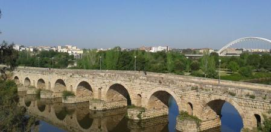

+34 634 75 04 00
+34 634 75 04 00
Hablamos tu idioma: Wir sprechen deutsch 🇩🇪/ on parle français 🇫🇷/ hablamos español 🇪🇸/ we speak english 🇺🇲/ parliamo italiano 🇮🇹 e otros idiomas!
Estamos aún trabajando en nuestra página web
Nuestra futura dirección: micamitravels.com
Unsere Philosophie
MICAMI ist ein unabhängiges Reiseveranstalter, das sich auf den Jakobsweg in Spanien, Portugal und Frankreich und andere Routen und Wanderwege spezialisiert Entdecken Sie unsere Caminos.
MICAMI arbeitet direkt mit den Pilgern zusammen, ohne Vermittler und doppelten Provisionen, und bietet so Qualität, menschliche Nähe und direkte Unterstützung.
Wir haben uns dem „slow“Reisen verschrieben und arbeiten direkt mit lokalen Unterkünften, Transportunternehmen und Restaurants zusammen. Viele von ihnen sind kleine, familiengeführte Unternehmen. Wir kümmern uns umeinander, um Qualität und Herzlichkeit zu bieten.
Unsere Pilger sind unsere zukünftige Freunde, denen wir die besten Erfahrungen auf ihrem Jakobsweg bieten wollen, ohne ihm die Hauptrolle abzunehmen (jeder muss natürlich seinen eigenen Weg gehen).
Haben Sie keine Angst, sich auf dieses Abenteuer einzulassen: In MICAMI werden wir „Ihr Camino-Engel“ sein, der erscheint, wenn Sie ihn brauchen.

En MICAMI
EstarÃamos felices en acompañarte en esta aventura, resolviendo paso a paso tus dudas y miedos y al final compartir contigo la alegrÃa de llegar al punto final.
Te ayudamos a diseñar la ruta, etapas adecuadas a tu idea y forma fÃsica, dÃas de pausa para descansar o aprovechar la oferta cultural al máximo.
Reservar alojamientos, comidas, transfer dentro del destino (no reservamos los vuelos), transporte del equipaje.
Estaremos a tu lado a través del teléfono durante tu camino, te responderemos y guiaremos para que tu aventura sea una BUENA experiencia.


Und warum MICAMI?

Wir sind Pilger, wir stecken in der Haut des Wanderers, der den Rucksack nimmt und JEDES JAHR die alten und neuen Wege geht .
Wir arbeiten seit mehr als 10 Jahren auf dem Jakobsweg machen Reservierungen, arbeiten als Reiseleiter, geben logistische und psychologische Unterstützung für Pilger während Camino.
Wir haben viele Gruppen in Spanien, Portugal, Frankreich und Italien begleitet.
Wir sprechen Ihre Sprache: Wir sprechen deutsch/ on parle français/ hablamos español/ we speak english/ parliamo italiano e otros idiomas!
Welche Routen bieten wir an? Start träumen
-

-

-

-

-

-

-

-

-


Wer ich bin
Liebe Pilgerin, lieber Pilger und Wanderer. Mein Name ist Olesia, oder einfach Oli, wie ich auf dem Jakobsweg genannt werde.
Ich möchte dir gerne meine Geschichte erzählen: Ich muss ehrlich sein: Der Jakobsweg (Camino de Santiago) war keine Liebe auf den ersten Blick. Am Anfang war es Interesse, Neugier, Überraschung und eine große körperliche Herausforderung. Es war mein erster Camino. Dann war ich eine Pilgerin, später eine Reiseleiterin, dann Manager für die Reservierungen in einer Agentur, die Ansprechpartnerin für viele Pilger und Wanderer, die Entdeckerin von neuen Wegen. Auf diese Weise habe ich in 10 Jahren direkt und indirekt tausende Menschen begleitet und sie in schwierigen Momenten und in der Freude über erfüllte Träume unterstützt.
Heutzutage ist der Jakobsweg ein ziemlich ausgebeutetes Touristenziel, aber keine Angst: Camino hat immer noch seinen Zauber, jeden nach seinem Geschmack, seinen Bedürfnissen und seinen Fähigkeiten aufnehmen zu können.
Ich erlebe Camino jedes Jahr wieder persönlich: Ich nehme meinen Rucksack und gehe Schritt für Schritt zu einfachen Sachen: Freundlichkeit, Gemeinschaft, die Schönheit der Natur und der jahrtausendealten Architektur, Zufriedenheit nach der Selbstüberwindung, Dankbarkeit für Kleinigkeiten. So bleibe ich in meinem Herzen mit dem Camino verbunden, mit diesem ersten Weg zu Fuß, den ich vor vielen Jahren gemacht habe.
En MICAMI renne ich nicht der Anzahl der Kunden-Pilger hinterher (auch wenn uns gefallen die Zahlen), ich ziehe es vor, einige wenige begleiten zu können, aber ihnen Qualität und Nähe zu geben, Zufriedenheit und den Wunsch, mehr zu entdecken: äußerlich und innerlich. Ich würde dich gerne auf deinem Camino begleiten.